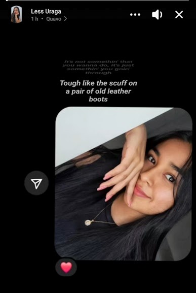
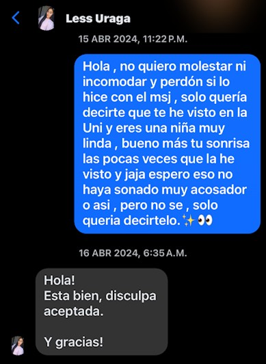
❤️ 💖 💗 ❤️ 💕 🌸Todo empezó muy extraño sin tú siquiera saber de mi existencia... tomándole capturas a tus historias porque no tenías muchas fotos y yo no quería dejar de verte, amor de mi vida. 🥹💘
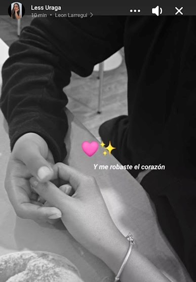
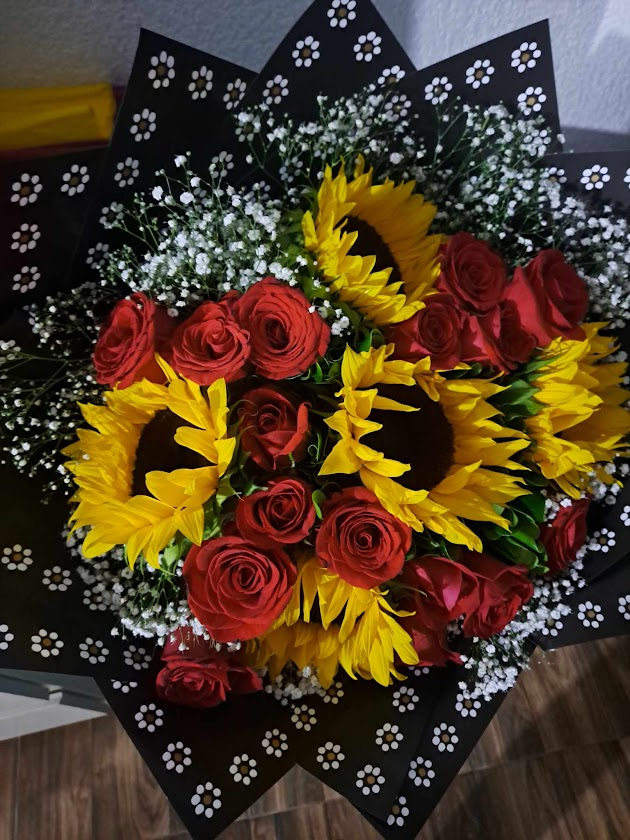
Ese día moría de nervios y te consta jaja, pero cuando aceptaste ser mi novia aunque sea un 60%, no tienes una idea de lo inmensamente feliz que fui... y ni se diga de poder darte ese primer besito que guardo en mi mente para siempre. 🥰💘
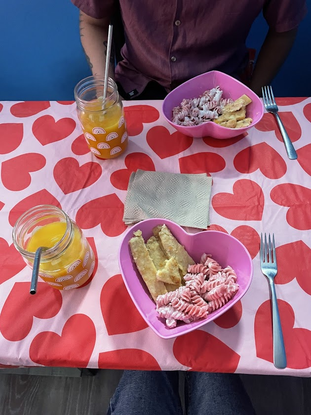
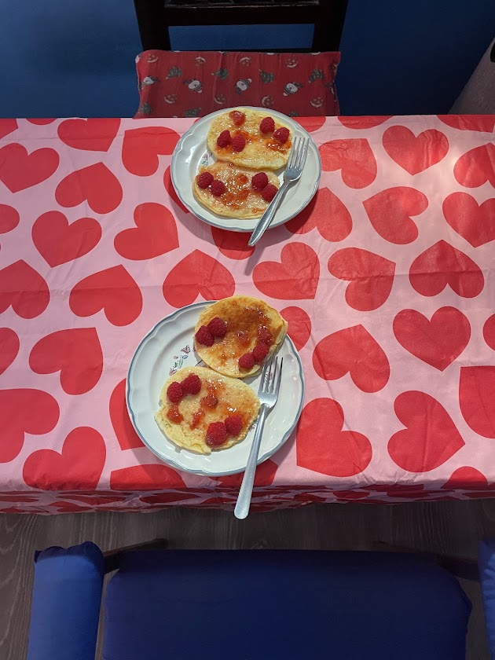
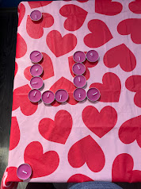
Nuestro primer San Valentín juntos donde quiero y voy a buscar que cada uno sea especial y bonito sin importar el tiempo que pase mi amor y más alla del dia , realmente siempre sea San Valentin para nosotros.😍💗
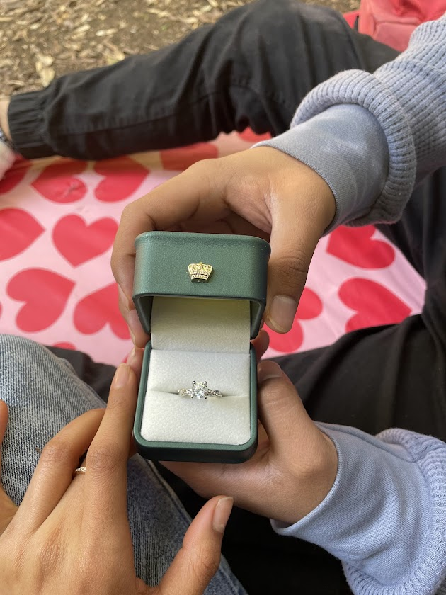
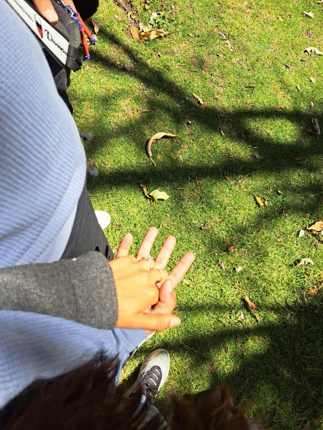
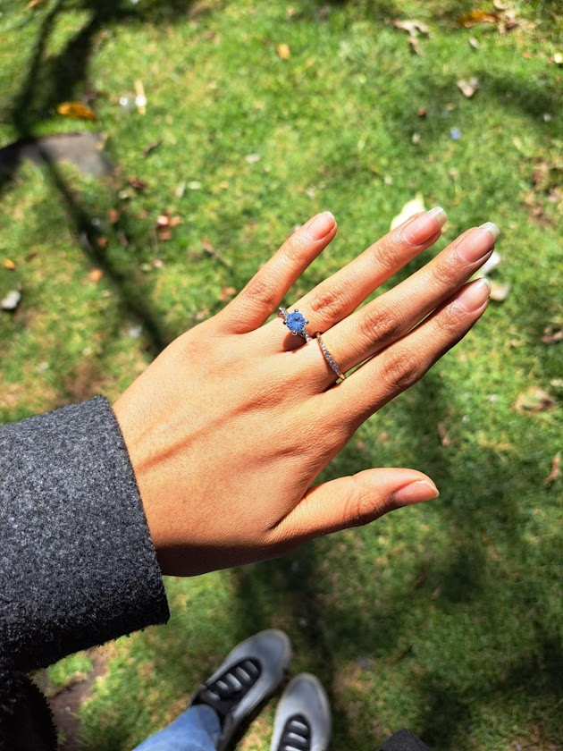
Nuestra primer salida lejos mi amor jaja , donde nos vimos mas tempranito y tu sentias que te perdia pero ayy fue un dia muy bonito buscando el momento adecuado para darte el anillo , me hace tanta ilusión pensar en nuestros futros viajes y conocer nuevos lugares juntos.😍💗
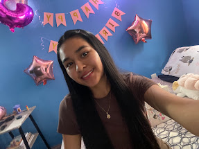
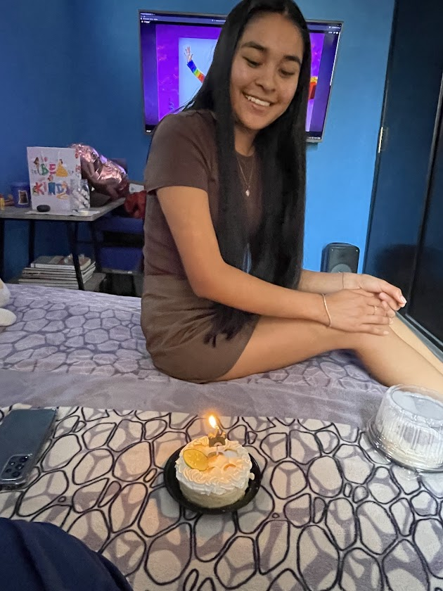
Ya hemos pasado por fin ambos juntos un cumple juntos y ha sido tan bonitos que no me veo viviendo al menos el mio de otra forma y ojala poder estar en los tuyos siempre....bueno mientras nos casamos poq jaja ahi ya no sera una opción preciosa y creeme que siempre buscare que lo disfrutes al maximo,te lo prometo amor de mi vida.💗🥹
(Escríbela en formato DD/MM/AAAA)
Escribo esto mientras te fuiste a dormir enojadita mi amor o tristesita lo cual para mi sin duda seria peor porque de por si es feito que no pasaremos este dia juntos amor de mi vida y aunque me esforce no se que tal te parezca este San Valentin , si fue mejor el anterior pero creeme que siempre buscare al menos hacer un detalle , sea manual , material o digital jeje poq somos ingenieros mi amorcito y sabes que las manualidades no se me dan mucho pero aun asi lo hare y sobre todo siempre eso si o si consentirte mucho amor de mi vida y bueno espero te guste este pequeño detalle y nuestro San Valentin atrasado mi amor , te amo inmensamente mi futura esposita